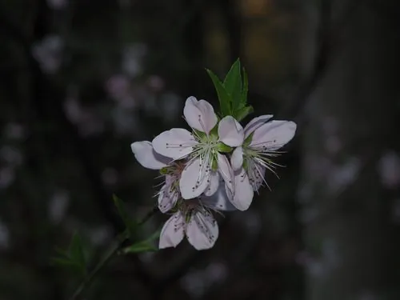

灌木与花木 · 植物界
桃花 Prunus persica

中国传统的春季观花与果树，桃花粉艳、果实甜美，栽培历史逾三千年，是文学与民俗中象征春天与爱情的花。
- 分类
- 门被子植物门纲木兰纲目蔷薇目科蔷薇科属李属
- 栖息环境
- 海拔 2000 米以下的平原、丘陵与山地，喜光耐旱耐寒
- 地理分布
- 中国西北地区原产，全国各地广泛栽培，华北、华东为主产区
- 保护级别
- 暂无评估；中国未列入国家重点保护野生植物名录
物种志
桃花为落叶小乔木，高可达 8 m，树皮暗红褐色、平滑；叶片椭圆状披针形，边缘具细锯齿，叶柄具腺体。花期 3–4 月，先花后叶，花单生，花径 2.5–3.5 cm，花瓣 5 枚，粉红、白色或深红色，重瓣品种常见；果实为核果，近球形，表面被短柔毛，成熟时白里透红，果肉多汁，内含深皱纹的硬核。
桃原产中国西北地区，栽培历史逾三千年，中国各地广泛栽培，华北、华东是主产区，喜光、耐旱、耐寒，适宜排水良好、土层深厚的沙壤土。桃花是春季最具代表性的观赏花卉之一，北京平谷、西藏林芝等地的桃花景观闻名遐迩；果实可鲜食、制罐与果脯，桃仁、桃花与桃叶均可入药。桃花在中国文化中象征春天、爱情与美好生活，“桃之夭夭”“人面桃花”等诗句流传千年，寿桃图案也常用于祝福长寿。
形态与习性
- 株高可达 8 m，树皮暗红褐色
- 花期3–4 月，先花后叶
- 果期6–8 月，核果近球形
- 光照喜光，不耐长期荫蔽
- 水分耐旱，怕积水
- 土壤排水良好的沙壤土
- 主要用途鲜食水果、观赏花卉、桃仁与桃花入药
趣味知识
- 桃花先花后叶，3–4 月满树粉红，是春季最具代表性的观赏花卉之一。
- 中国栽培桃的历史逾三千年，“桃之夭夭”“人面桃花”等诗句流传至今。
- 桃的果实表面有短柔毛，果核表面有深皱纹，是辨认桃的特征。
- 北京平谷、西藏林芝的桃花景观闻名全国，每年春季吸引大量游客。